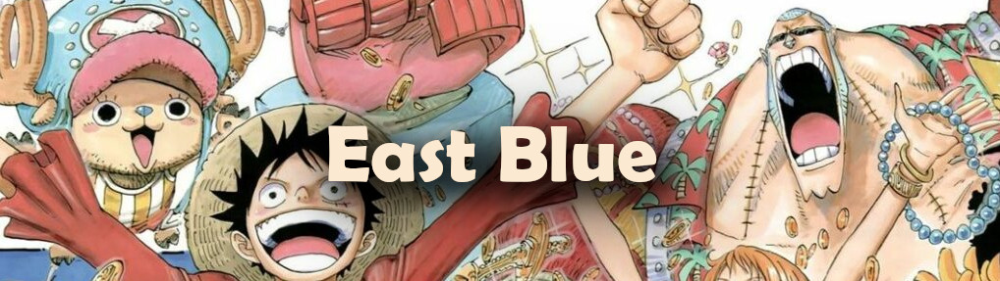
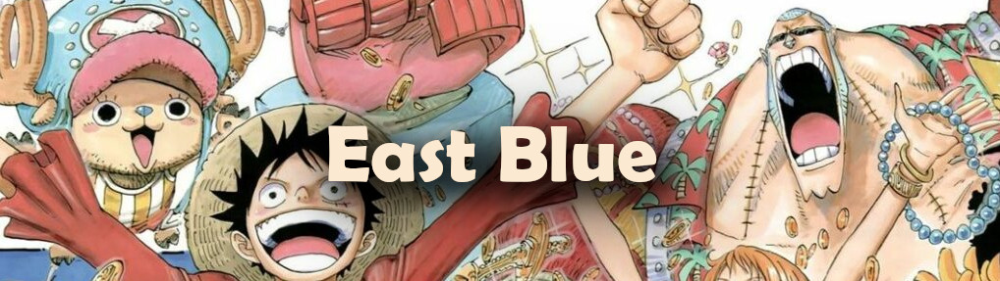

SAGA EAST BLUE
 

Começamos pela saga que apresentou Luffy ao mundo, a chamada Saga East Blue. Ela mostra o personagem ainda criança vivendo em East Blue e no início do recrutamento de tripulantes para ele caçar o One Piece e tentar se tornar o Rei dos Piratas.
Arcos da Saga:
- Arco Romance Dawn (ou Arco do Capitão Morgan): episódios 1 ao 4;
- Arco Orange Town episódios 5 ao 8;
- Arco Vila Syrup episódios 9 ao 18;
- Arco Baratie episódios 19 ao 30;
- Arco Arlong Park episódios 31 ao 44;
- Arco Bando do Buggy: Após a Batalha!: episódios 46 e 47;
- Arco Loguetown: episódios 45 e 48 ao 53.